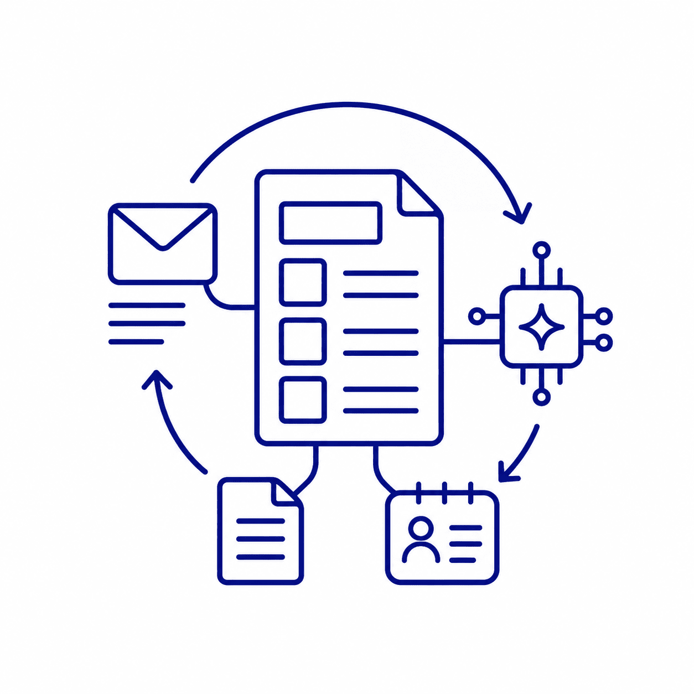

情報と知恵を、かたどる。
中小企業や各種団体に向けて、生成AIを実務で活用するための研修・セミナー・導入支援を行います。
文章作成、情報整理、企画立案、資料作成、顧客対応、業務効率化など、日々の仕事にすぐ使える形でAI活用を設計します。「AIは難しい」「どこから始めればいいかわからない」という方に寄り添い、現場に合った形で支援します。
初心者向け・業種別・社内研修。基礎から実践まで、現場に合わせて設計します。
各部署へのヒアリングから、どのツールをどう使うか、使い方設計・運用ルールづくりまでオーダーメイドで伴走支援を行います。

メール・資料作成・議事録・情報整理など、業務に合わせたAIテンプレートを作成。業務で繰り返し使える仕組みを作成します。
行政・商工団体・士業団体・業界団体から民間企業まで、幅広い現場で生成AIセミナー・研修を実施しています。
| 生成AIセミナー | 初心者向け／業種別（製造・小売・医療・士業など）／社内研修。オンライン・対面どちらも対応 |
|---|---|
| 導入支援 | ツール選定、使い方設計、運用ルールづくり、社員への説明資料作成まで |
| 業務改善支援 | 現状業務のヒアリングから、AIで改善できるポイントの洗い出し・実装まで |
| 社内活用支援 | 利用ルール策定、活用事例集・マニュアル作成、定期フォローアップ |
岡田印刷が、現場に寄り添いながら一緒に解決します。
まずは相談する